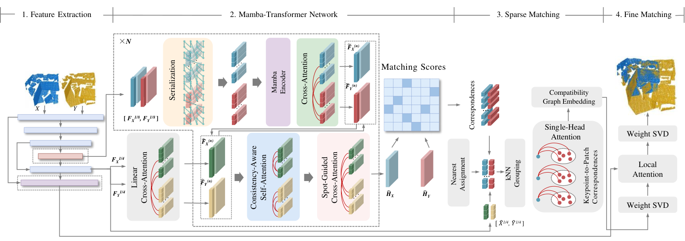
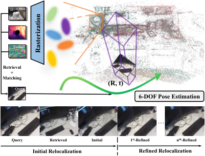
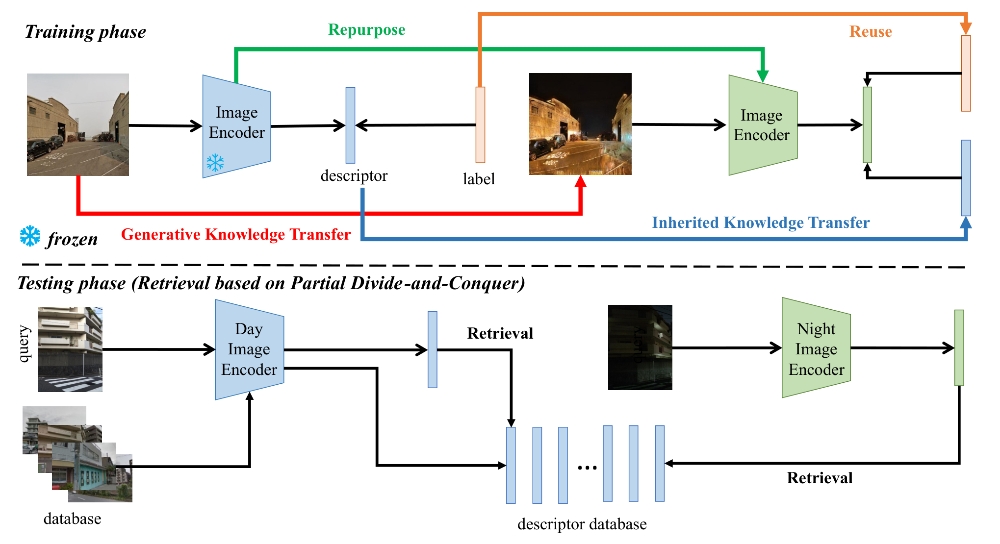
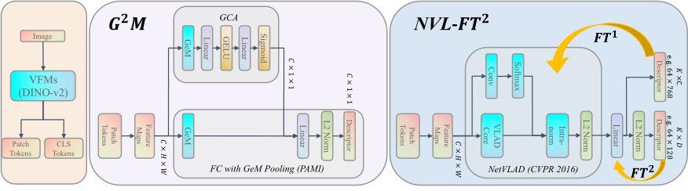

最新动态
加入众擎机器人，担任具身算法工程师实习生。
MT-PCR 荣获 CVM 2026 最佳论文奖，并作口头报告。
团队获智能语义 SLAM 挑战赛一等奖。
更早的动态收起动态
单人参赛，获 Meta 视觉位置识别排行榜第一。
作为项目唯一开发者，获机器人大模型与具身智能挑战赛二等奖。
研究论文
* 共同第一作者 · † 通讯作者。在审及投稿条目不代表已接收。



NPR: Nocturnal Place Recognition Using Nighttime Translation in Large-scale Training Procedures
第一作者
TextInPlace: Indoor Visual Place Recognition in Repetitive Structures with Scene Text Spotting and Verification
通讯作者
A convolutional-transformer network for crack segmentation with boundary awareness
共同第一作者
A Flexible and Efficient Loop Closure Detection based on Motion Knowledge
第一作者
Tracking MiM: Efficient Mamba-in-Mamba Serialization for Real-time UAV Object Tracking
第一作者
Learnable Query Aggregation with KV Routing for Cross-view Geo-localisation
共同第一作者
EmbodiedPlace: Mixture-of-Features with Embodied Constraints for Visual Place Recognition
第一作者
Asymmetric Learning with Collaborative Inference for Drone-to-Satellite Visual Geo-localization
第一作者
HAM-VLN: Harnessing Hierarchical Agentic Memory for Zero-Shot Vision-and-Language Navigation
共同第一作者
VLA-Refresh: When and What to Refresh in Vision-Language-Action Token Caching
An Accurate Outlier Rejection Network with Higher Generalization Ability for Point Cloud Registration
合作作者
Deep Homography Estimation for Visual Place Recognition
合作作者
Low-overlap Point Cloud Registration by Semi-global Block Matching
合作作者
An Efficient Outlier Rejection Algorithm for Point Cloud Registration
合作作者
When Objectives Agree But Rules Do not: The Hidden Cost of Exposing Rule Errors In Optimization Models
合作作者
Plans Are Not Proof: Paired Evidence Tests for Multi-UAV Agent Trajectories
合作作者
AeroCommit: Evidence-Guided Verification of Vision--Language Reports Before Multi-UAV Action
合作作者
学生指导
我曾指导三位本科生从科研入门开始开展研究。以下为他们的本科院校与后续去向。
- Huaqi Tao 广西大学 → 南方科技大学
- An Liu 重庆大学 → 中国科学院自动化研究所
- Tingjun Huang 南方科技大学 → 苏黎世联邦理工学院
教育与经历
教育背景
- 2022.09 — 2027.02
- 2019.09 — 2022.06
- 2019.06 毕业
中国矿业大学
工学学士 · 电气工程及其自动化
研究与实习
- 2026.06 — 至今
众擎机器人
具身算法工程师 · 实习
自我中心数据采集与标注、具身数据管线，以及面向具身智能的视觉基础模型。
- 2022.09 — 2026.05
鹏城实验室
研究助理 · 实习
基于视觉基础模型的定位、Mamba 位姿估计与跟踪，以及多模态全球定位。
- 2021.04 — 2021.11
华为
3D 算法工程师 · 实习
RGB-D 三维重建、多深度传感器适配、CUDA 加速深度滤波与视觉定位。
项目实践
语言驱动的三维运镜
2026.02 — 04赛尔智控 · 深圳
结合 VLM、SAM2 与 3D Gaussian Splatting，以自然语言规划分镜与相机轨迹。
技术细节
通过多视角语义理解与深度反投影定位实体，由语言模型规划分镜，再结合轨迹平滑与场景约束减少穿墙和渲染伪影。
无人系统的端云协同感知
2024.04 — 2026.03鹏城实验室 / 中国联通
连接 Jetson 端侧视觉模型与云侧多模态大模型，实现开放世界目标检测与跟踪。
其他实践 · 机器人数据采集与策略评估
Seeed Studio · 2026.08 — 09
使用 LeRobot 与 SO-ARM101 进行遥操作数据采集及 ACT 策略训练、评估。
荣誉与奖励
CVM Best Paper Award
MT-PCR · 共同第一作者 · Oral
智能语义 SLAM 挑战赛 · 一等奖
全国计算机辅助设计与图形学会议 · 第三作者
Meta 视觉位置识别排行榜 · 第一
2024 年 7 月 · 单人参赛
中国科协青年人才托举计划
中国图象图形学会
机器人大模型与具身智能挑战赛 · 二等奖
中国软件大会 · 项目唯一开发者
教育部–华为智能基座奖学金
教育部–华为